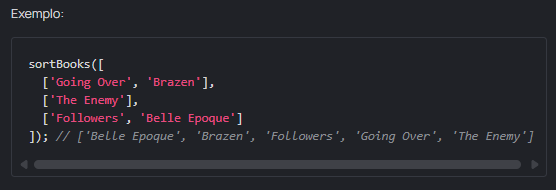
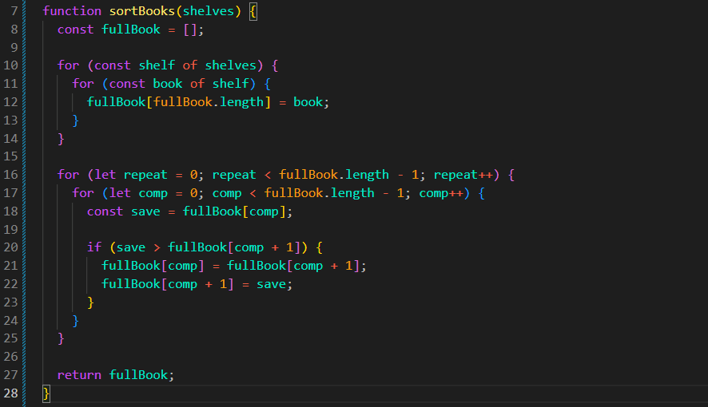

A Biblioteca Mate está passando por um momento difícil. É muito caro
manter um bibliotecário, então nos últimos 5 anos, a biblioteca tem
funcionado sem ele. Os leitores vêm, pegam os livros e vão embora. Mas
eles não colocam os livros de volta no lugar certo. Nos bons e velhos
tempos, todos os livros na biblioteca eram organizados por ordem
alfabética. Agora as prateleiras estão um caos. Nossos robôs da
Fábrica de Robôs Mate vêm para o resgate. Vai ser divertido? Eu acho
que não. Vamos remover todos os livros das prateleiras e organizá-los.
Escreva uma função sortBooks que irá receber um array de shelves
(arrays de livros) e retornar um array de livros ordenados
alfabeticamente.

Resultado
JS:

Explicacao Codigo:
1) Primeiro for: acessa cada prateleira.
2) Segundo for: dentro de cada prateleira, acessa cada
livro e coloca todos em fullBook.
3) Terceiro for (repeat): faz a parte da ordenação se
repetir várias vezes, até chegar ao final das posições.
4) Quarto for (comp): percorre os livros comparando um
com o próximo e fazendo a troca quando necessário.
Dica Importante
Acesso por índice com + e - Quando usamos + ou - dentro dos colchetes
de um array, o cálculo realmente acontece, mas podemos pensar nele
como um deslocamento a partir do índice atual:
Exemplo
array[comp] // posição atual
array[comp + 1] // uma posição à frente
array[comp - 1] // uma posição atrás